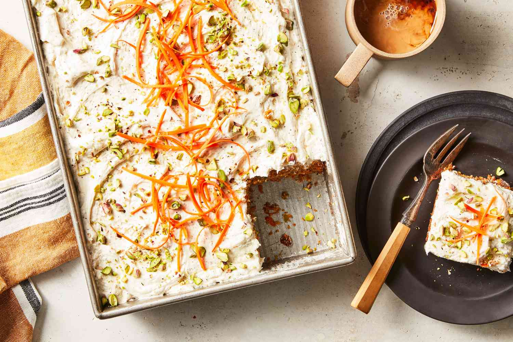

Brown Butter Carrot Cake
Home

Description
This spiced carrot cake with brown butter frosting is sure to be a hit at your next party. Filled with warm spices and flavor that is sure to have you drooling, you'll find yourself overwhelmed with people trying to get the recipe out of your hands.
This recipe is perfect for the fall or winter!
Ingredients for Carrot Cake
- 2 1/4 cups (280g) all-purpose flour.
- 1 tsp baking powder
- 1 1/2 tsp baking soda
- 1 tsp salt
- 2 1/2 tsp ground cinnamon
- 3/4 tsp ground nutmeg
- 3/4 tsp ground ginger
- 1/4 tsp ground cloves
- 1/4 tsp ground cardamom
- 1 1/2 cups light brown sugar packed
- 1/2 cup granulated sugar
- 1 cup canola or vegetable oil
- 4 large eggs room temperature
- 1 tsp vanilla extract
- 1/4 cup sour cream room temperature
- 1/4 cup applesauce room temperature
- 3 cups (~6 medium carrots) shredded carrots
Ingredients for Brown Butter Cream Cheese Frosting
- 1/2 cup (1 stick) unsalted butter browned and cooled
- 8 oz (1 block) cream cheese room temperature
- 1 tsp vanilla extract
- 4 cups powdered sugar
Instructions
Carrot Cake
- Preheat oven to 325°F and line a 9x13" cake pan with parchment paper (covering the sides)
- In a medium bowl, whisk together the flour, baking powder, baking soda, salt and spices
- In a large bowl, whisk together the sugars and oil. Add the eggs, vanilla, sour cream, and applesauce, mixing well after each addition.
Scrape the sides of the bowl as necessary
- Sift and fold the flour mixture into the wet ingredients just until a few dry streaks are visible. Then, fold in the shredded carrots.
- Pour the batter into the prepared cake pan and bake for 40-50 minutes, or until a toothpick inserted in the middle comes out clean. Allow the cake to cool completely before frosting.
Once the cake has cooled, feel free to lift it out of the pan by grabbing the edges of the parchment paper.
Brown Butter Cream Cheese Frosting
- Place the butter in a pan over medium heat. Stir until the butter brown and releases a nutty aroma. Let it cool.
- Mix the cream cheese in a large bowl. Stir in the cooled brown butter, vanilla, and powdered sugar until well combined.
- Spread an even layer of frosting over the cooled carrot cake. Cut into 24 pieces (or less for bigger slices) and enjoy!